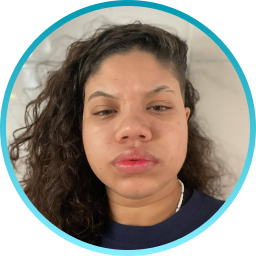

Sobre mim
Hellen Cristina Neves Iwata
Estagiária em Cloud Plataforms - TIVIT
Atualmente sou estagiária na empresa TIVIT, sendo a minha primeira oportunidade de atuar dentro da área da tecnologia. Tenho conhecimento em HTML, CSS e estou adquirindo conhecimento em JavaScript e Python.
Atuo na área de Middleware realizando por exemplo, parada e subida de aplicações (como JBOSS e TOMCAT) quando há indisponibilidade dela, atuação na ferramenta do Jenkins, substituição de arquivos no ambiente Linux e Windows, checagem de conexão de portas. Além disso, atuei também em sistemas operacionais com Linux, realizando montagem, limpezas e rotacionamento de filesystem, análises de serviços que oneram a CPU, memória, entre outros tópicos, garantindo a métrica escolhida pelos clientes.
Tenho experiência profissional em atendimento ao cliente, realizando a análise de risco para inúmeras transações financeiras e atuando como 'backoffice' para análise mais profunda e resolução de casos.
FORMAÇÃO
Sistemas de informação
- Instituição: Anhembi Morumbi - EAD | Bacharelado
- Previsão de conclusão: Dezembro/2024
Formação em Python
- Instituição: Alura | Complementar
- Previsão de conclusão: Setembro/2023
- Repositório Github: Sem Repositório
Linux Fundamentals
- Instituição: DIO - Digital Innovation One | Complementar
- Concluído em: Fevereiro/2023
- Repositório Github: Linux Fundamentals - Dio
Desenvolvimento Web front-end
- Instituição: IOS - Instituto da Oportunidade Social | Complementar
- Concluído em: Dezembro/2021
- Repositório Github: Psicologicamente
Administração
- Instituição: ETEC Albert Einstein | Técnico
- Concluído em: Dezembro/2017
CERTIFICAÇÕES
Network Security Associate | Fortinet
- Concluído em: Julho/2023 | Expira em: Julho/2025
- Código para visualizar o certificado: uczbLIBY3u | ORBKygHePC
EXPERIÊNCIA
Programa de Estágio | TIVIT
- Agosto/2022 - Atual
- Análise e monitoração das principais falhas de ambientes híbridos (Windows, Linux e Webservices), analisar e desenvolver de forma prática nas ferramentas de Webservices como JBoss, Apache TomCat, WebSphere e Java EE. Além de realizar o controle e garantia dos indicadores contratados pelos clientes, como o SLA.
Analista de atendimento sênior | Foundever
- Fevereiro/2021 - Julho/2022
- Suporte aos analistas em tempo real de atendimento, atuação como 'Backoffice' para análise mais profunda e resolução de casos, e, realização de análises de risco para várias movimentações financeiras.
Analista de atendimento ao cliente | Foundever
- Setembro/2019 - Janeiro/2021
- Suporte à todos os usuários do maior processador de pagamentos online do mundo. Fazendo análise inicial de dados para prevenção de fraudes, transações de risco e verificação de dados.
Agente de atendido ao cliente | Foundever
- Fevereiro/2019 - Agosto/2019
- Suporte as máquinas de cartão, auxiliando na resolução inicial de problemas técnicos (como conectividade e impressão) e agendamento de segundo contato e físitas técnicas para a troca da máquina.
Projetos
FRONT-END
Psicologicamente
A prospota do projeto é produzir uma aplicação com as linguagens e tecnologias estudadas ao longo da formação do curso de Desenvolvimento Web realizado no IOS. Com isso, o objetivo da aplicação é disponibilizar informações gerais sobre a psicologia, fazer com que as pessoas tenham interesse no assunto, entender a importância da saúde mental e trazer a facilidade no acesso da informação.
Para mais informações sobre a aplicação clique aqui para acessar a apresentação e clique na imagem para acessar a aplicação.